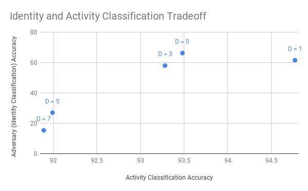
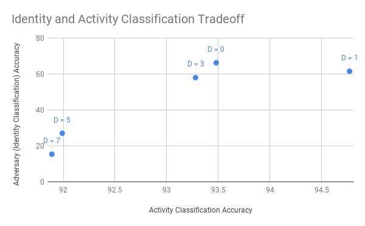

ICLR Reproducibility Challenge: Generative Adversarial Models For Learning Private And Fair Representations
Angel Alexander Cabrera, Varun Gupta, Will EppersonFall 2018 CS 4803 / 7643 Deep Learning: Final Project
Georgia Tech
Introduction/Background/Motivation
What did you try to do? What problem did you try to solve? Articulate your objectives using absolutely no jargon.
In our project, we attempted to reproduce the work of a paper on OpenReview.net entitled Generative Adversarial Models for Learning Private and Fair Representations, which is currently under double-blind review for ICLR19. This paper explores using a generative adversarial architecture to create a decorrelation mechanism that obfuscates a sensitive variable while still preserving the utility of the original data. This mechanism can be used to ensure a dataset is private and fair for a protected feature while keeping the remaining data useful for learning tasks. In our work, we replicated the architecture described in the paper and reproduced the results for the UCI Human Activity Recognition (HAR) dataset. The objective was to investigate the reproducibility of the results of the paper to confirm the validity of their approach.
How is it done today, and what are the limits of current practice?
It is often desireable to decorrelate data from a protected feature to preserve the privacy of the data instances or ensure fairness between feature values. Learning a decorrelation mehcanism is a difficult problem that has various different approaches. Previous works such as those by Abadi & Andersen in 2016, Edwards & Storkey in 2015, Raval et al. in 2017, and Tripathy et al. in 2017 Should we have a references section and make this legit?have commonly used methods such as auto-encoders in order to obfuscate sensitive features. This paper takes a novel approach, using a generative adversarial network (GAN) model to generate obfuscated data by learning where to selectively insert noise where necessary. Futhermore, this approach focuses on privacy guarantees as a pre-processing task that is model and goal agnostic, whereas other works have focused on modifying learning algorithms in real time as they learn or generate decorrelated data specific optimized for one learning task (such as in Dwork et al., 2012, Fish et al., 2016, Zhang et al., 2018). By subjecting the amount of obfuscation of the data to a distrotion constraint, the authors hope to preserve dataset utility while still decorrelating sensitive attributes.
We also hope to improve on the results provided by this specific paper. Since it is under double-blind review for submission to ICML'19, the code and model architecture is not currently open-source. In addition, as was articulated by some of the reviews, the architecture of the model is not very clearly described. By releasing our code and describing our process in detail, we hope to make the process and technique much clearer and more accessible.
Who cares? If you are successful, what difference will it make?
There is a growing conversation in machine learning communities regarding privacy and fairness. Statistical models can easily encode bias and treat different groups disparately, either as a result of the original data or as a result of imbalances in the learning process. Additionally, some models may unintentionally reveal sensitive data, potentially making an individual's personal information vulnerable. As described in the paper, much recent work in this area has focused on context-free privacy and fairness, which has proven to be very effective. However, these guarantees do not leverage the data to obscure sensitive features in a particularly specific way, thus often leading to significant accuracy tradeoffs. In contrast, context-aware solutions tend to create representations of data that preserve utility while making it harder to learn the sensitive data. This work builds on recent developments in generative models which have demonstrated to be effective in this task. The main difference in this paper is that the decorrelating mechanism introduced does not depend on fixing a particular target variable or learning task. Previous work has focused on learning representations of data that maintain utility with respect to a particular task. Creating a robust decorrelation mechanism that is independent of a particular learning task would be very useful for this field.
In terms of our work, reproducibility of academic studies has also become increasingly important to machine learning communities. We are helping in this endeavor by recreating the results from this paper. Active engagement by students is one of the best ways to push academics and researchers to release datasets and code and prioritize reproducibility and reliability in their published work.
Approach

What did you do exactly? How did you solve the problem? Why did you think it would be successful? Is anything new in your approach?
Overview of Generative Adversarial Privacy and Fairness (GAPF) Framework
We reproduced the Generative Adversarial Privacy and Fairness (GAPF) mechanism outlined in the paper. The mechanism is a generative adversarial neural network in which the generator attempts to learn a representation of the data from which the adversary is not able to discern the sensitive attribute. The sensitive attribute for the HAR dataset used is the attribute representing the subject's identity. The approach in the paper is novel because the GAPF framework learns a representation that is agnostic of the downstream predictive task. That is, the generator is able to learn a representation of the data that is useful for any number of tasks one might want to use the data for. This is a key difference between the GAPF framework and previously introduced decorrelating mechanisms.
HAR Dataset
The HAR dataset used consists of smartphone motion sensor data with 561 features collected from 30 subjects. The target variable represents one of six activities (walking, walking up stairs, walking down stairs, sitting, standing, laying) that each subject is performing. The motion sensor features represent the public variables and the subject's identity represents the sensitive variable.
Implementation of the Model
We use the same model architecture as the paper as described below. However, we implemented the model ourselves and used PyTorch, whereas the original paper used TensorFlow.
The decorrelator is modeled using a four-layer fully connected feedforward neural network. The decorrleator expects an input of 661 features, which is the original data concatenated with 100 features of Gaussian noise. The network's three hidden layers consist of 512 neurons with leaky ReLU activations and batch norm for regularization. The output layer has 561 neurons, used to generate processed data with the same dimensionality as the original.
The adversary is a five-layer feedforward neural network. The adversary expects an input of 561 features, the dimensionality of the original data. The four hidden layers have 512, 512, 265, and 128 neurons, respectively, each with leaky ReLU activations and batch norm. The output layer has 30 neurons which output the adversary's belief of the subject's identity.
Lastly, we implemented an activity classifier to validate that the decorrelated data is still usable in a generic learning task. It is the same architecture as the adversary except for the final layer that is only six neurons.
We used cross-entropy loss for the adversary prediction and an an L2 regularizer to measure distortion of the decorrelation. The regularizer was used to impose the distortion constraint on the generator to limit the amount the processed data could differ from the original. The distortion was captured by a parameter set in the model and the regularizer only penalized values that had an L2 norm exceeding this value.
Training
Since the paper did not make clear the hyperparameters or training strategy used, we experimented with various techniques. The theoretical algorithm is described in section C as an alternating minimax algorithm. We first tried the exact strategy they use: (1) Randomly sample a minibatch (2) Train the adversary for j epochs on the minibatch (3) Take a gradient ascent step for the generator. We found that the adversary trained much faster than the generator, and using one minibatch at a time did not lead to good convergence.
Our modified training technique uses an alternating training approach. We first train the generator for i epochs on random minibatches, then train the adversary for j epochs on random minibatches. We run this alternating game for a total of T iterations. The parameters we used are as follows:
| Parameter | Value |
|---|---|
| Generator Epochs | 5 |
| Adversary Epochs | 1 |
| Total Iterations | 50 |
| Distortion Weight | 0.1 |
| Distortion | 0, 1, 3, 5, 7 |
The final detail for training is how the losses are defined for each model. The adversary uses a simple cross-entropy loss for classification when training. For the generator, we use the negative loss of the adversary added to a distortion loss. The distortion loss measures how noisy the decorrelated output is, and controls the balance between noise and decorrelation. We define this loss as the L2 distance between the original data and the decorrelated data, weighted by a distortion weight. This loss is then set to the maximum of 0 and the l2 distance minus the distortion parameter D.
What problems did you anticipate? What problems did you encounter? Did the very first thing you tried work?
Although the original code from the paper is not provided, the paper clearly states the outline of the implementation. We were able to implement their formulation relatively easily. One issue we faced was the order in which to train each network. Further, the paper did not identify their hyperparameter settings, such as the regularization weight. We experimentally chose values for these hyperparameters but discrepancy in these values may cause our results to differ slightly from the paper.Experiments and Results
How did you measure success? What experiments were used? What were the results, both quantitative and qualitative? Did you succeed? Did you fail? Why?
Experiments
We ran multiple experiments with different values for the distortion parameter. As described above, the distortion parameter captures how much the learned representation is allowed to differ from the original data. Higher distortion values mean that the generator is able to modify the data more, which we expect would lead to lower classification accuracy for both the target and sensitive variables. We ran experiments for distortion values D ranging between 0 and 7.
Results
We focused our evaluation on two areas: 1) the utility of the learned representation and 2) the obfuscation of the sensitive variable.
To measure the utility of the learned representation we compared the predictive power of a neural network in classifying the activity attribute on the original data and the learned representation. The classifier used was a neural network with the same architecture as the adversary described above.
To measure the generator's effectiveness in obscuring the sensitive variable, we compared the adversary's activity prediction accuracy between the original and processed data.
Finally, we also show the tradeoff between classification accuracy of target and sensitive variables for different values of distortion.
 

The first chart demonstrates that as the distortion level increases, the adversary's ability to predict the identity of the subject decreases while the classifiers ability to learn the target variable remains relatively stable. This indicates that the generator is sufficiently obfuscating the sensitive variable while still maintaining utility of the dataset. This is what we expect to happen under the GAPF framework.
The second chart visualizes the data in a slightly different manner, emphasizing the rate of degradation for each classification for different distortion values. We can see that the adversary's classification accuracy degrades much quicker than the activity classification accuracy. Further, we see that for higher distortion values the generator is able to learn a representation that hides the sensitive attribute fairly well while only sacrificing minimal activity classification accuracy.
Discussion
Talk about similarity to paper, overall success